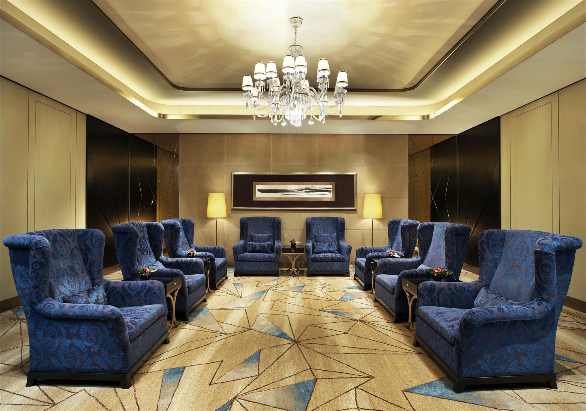

NEW KILIMANJARO HOTEL
Luxurious Accomodations
New Kilimanjaro boasts a selection of meticulously designed rooms and suites, each featuring elegant furnishings, high-speed
wi-fi and stunning views of the cityscape or tranquil gardens. The Royal Suites offer an elevated level of opulence with spacious
living areas, private balconies and exclusive amenities.
Exquiste Dining
Dining at new kilimanjaro Hotel is a culinary journey. The hotel's main restaurant, The Regal Room, presents a menu of gourmet dishes
that highlight both international flavors and local specialities, all crafted by our acclaimed chefs. For a more relaxed setting
the Terrace Cafe provides al fresco dining with an extensive selection of beverages and light bites.
Top-Notch Amenities
Guests can unwind in the serene ambiance of the hotel's full-service spa, which offers a range of treatments designed to rejuvenate
the body and mind. The rooftop infinity pool provides a stunning backdrop for relaxation, while the modern fitness center ensures
that guests can maintain their fitness routines during their stay. Business travelers will appreciate the fully equipped business
center and versatile conference rooms.
Prime Location
New Kilimanjaro Hotel's prime location offers easy access to the city's most popular attractions, shopping areas, and cultural sites.
Whether you're exploring local museums, attending a business meeting or enjoying a night out, everything is conveniently close.
